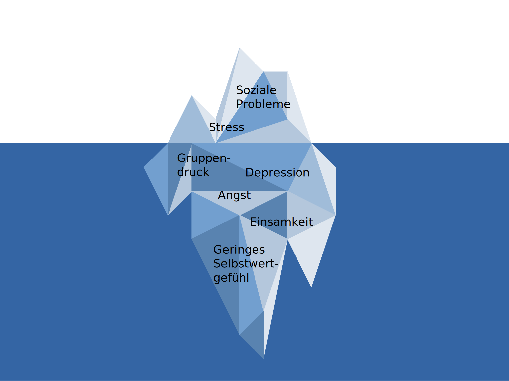

Gründe für die Suchtentstehung und dessen Folgen

Das Eisberg-Modell
Das Eisberg-Modell zeigt, dass es viel mehr Ursachen gibt, dass eine Sucht entsteht, als man denkt. Man würde glauben, man wüsste, was der Grund ist, aber in Wahrheit ist es etwas Ungewöhnlicheres, das man nicht erwarten würde.
Andere Faktoren
Es gibt aber auch andere Faktoren für die Entstehung einer Sucht:
• biologische/genetische Faktoren
• kulturelle Normen
• poltische Einflüsse
Folgen einer Sucht
(Stoffgebundene) Suchten sind nicht du schädlich für die Organe, sondern führen u. a. auch zu
• Nichtbeachtung von Pflichten & Terminen
• Finanzielle Schwierigkeiten
• Abwesenheit
• Vernachlässigung von sozialen Kontakten